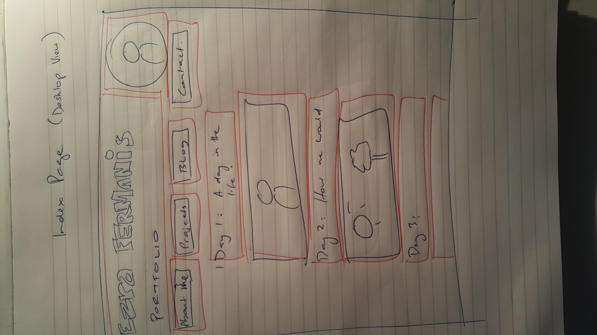
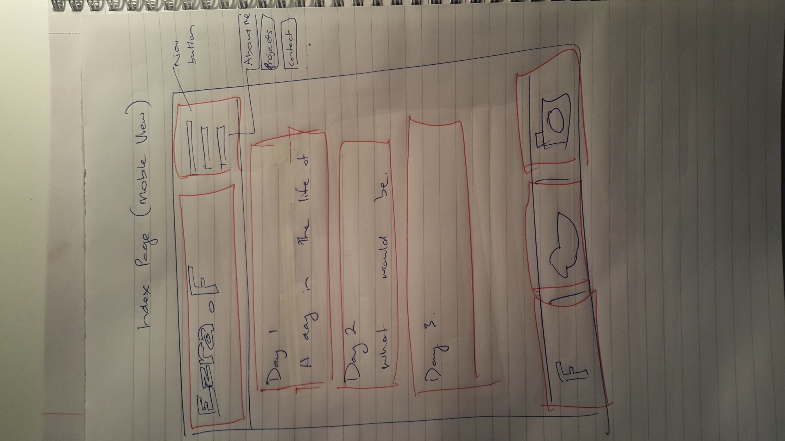
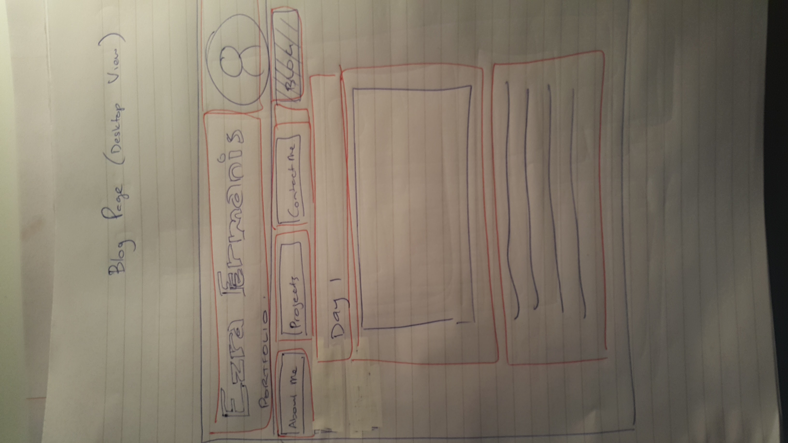
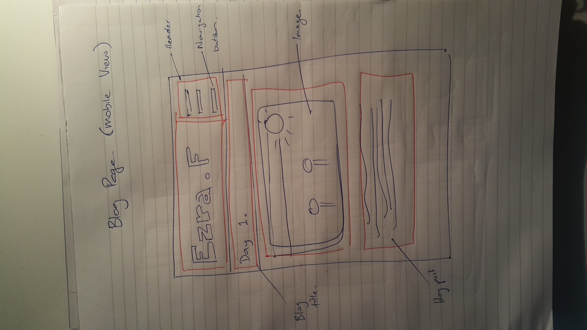

Design to Web
What a responsive site is, and why responsiveness is important
A responsive site is a site that adapts or changes depending on the size of the screen that is being used. As the name says, it 'responds' to changes in screen size, and adjusts the layout, and look to better suit the size of the screen. Website responsiveness is becoming more and more important because of the increasing use of smaller handheld devices and tablets etc.
What mobile first design is, and why it's important
Mobile first design is the design method of building a website to firstly and primarily suit mobile devices, and then once the primary mobile design is taken care of, working to then make it desktop presentable. In other words designing a website with 'mobile device' users primarily in mind first. As it's easier to go from mobile - desktop design and not the other way around.
What frameworks are, and their pros and cons
Frameworks are code, folders and files that you can use as essentially the foundations or 'building base' of your website. It can outline the grid, styles, fonts etc that you can use for your site. It saves you having to 'reinvent the wheel' so to speak, and allows you to use a ready framework instead of beginning from ground zero. Pros are you save ALOT of time an effort. And they're free and there is so many options to choose from. Cons are that you don't get as much customisation as you would doing it your own way, and also you don't learn from using someone elses code.
What a wireframe is and why we use it
Wireframes are essentially the blueprints of a website. It's just a sketched out mock up of how the site will look, different elements and buttons as well as boxifying the different components of the website.
The aspects of your wireframes you found difficult to implement, and why?
Well I was pressed for time, so I left out social media button links. Got rid of a blog button and a few other changes. Sometimes it's alot easier designing what you want something to look like, but then actually getting something to 'look' and work how you want it to is a whole nother story.
My Wireframes:
   